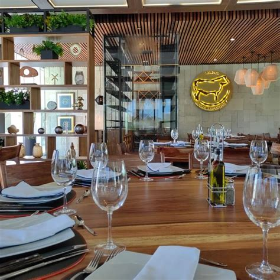
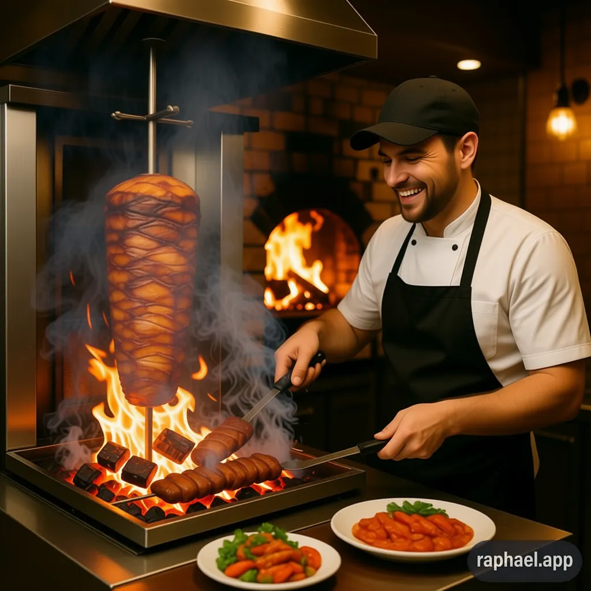

Inicio
O restaurante Ledo Leitón é un lugar onde a calidade e a experiencia son prioridade. A nosa carta, elaborada polos nosos chefs con experiencia internacional, ofrece unha variedade de pratos que reflicten a mellor cociña da rexión.
Sempre estamos dispostos a adaptarnos ás túas preferencias e ás túas necesidades. Non dubides en contactarnos para reservar unha mesa ou para calquera outra consulta.
Entradas
O restaurante
Na carta de Ledo Leitón atoparás unha selección coidadosamente elixida de pratos que reflicten a mellor cociña da rexión. Os nosos chefs, con experiencia internacional, crearon unha variedade de pratos que son unha combinación de sabores e técnicas perfeccionadas ao longo dos anos.
Sempre estamos dispostos a adaptarnos ás túas preferencias e ás túas necesidades. Non dubides en contactarnos para reservar unha mesa ou para calquera outra consulta que teñas.